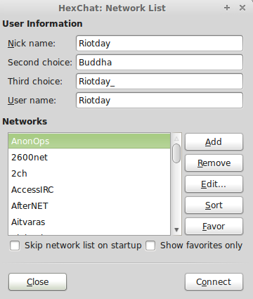
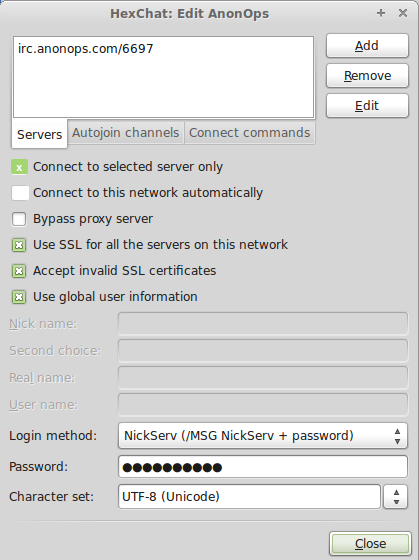

Setting up Hexchat IRC on Windows
HexChat
Installing the Client:
1. Click the following link in a browser to download the HexChat client: http://hexchat.github.io/downloads.html- If you recieve TLS Fatal Error and disconnections download the testing build: http://dl.hexchat.net/hexchat/testing/
A new window opens.  5. At the top you will see newserver/6667
Replace that with irc.anonops.com/6697 and hit Enter.  6. Mark the following checkboxes:
Connect to the selected server only. Use SSL for all the servers on this network. Accept invalid SSL certificates. Check use global user information unless you want to use a different nick/user for this server. If so, fill in the spaces under this.7. Enter your desired nickname, username (ident), and real name (gecos). 8. Click Close and then click Connect.
Setting up Hexchat IRC on Linux
HexChat
Installing the Client:
GNU/Linux Debian (Ubuntu + SUSE)
The lastest Hexchat version is present in current repositories1. Add the PPA to your system:
$ sudo add-apt-repository ppa:gwendal-lebihan-dev/hexchat-stable
Update the local repository index:
$ sudo apt-get update
Install HexChat on Ubuntu and Linux Mint:
$ sudo apt-get install hexchat
A new window opens. 4. At the top you will see newserver/6667
Replace that with irc.anonops.com/6697 and hit Enter. 5. Mark the following checkboxes:
Connect to the selected server only. Use SSL for all the servers on this network. Accept invalid SSL certificates. Check use global user information unless you want to use a different nick/user for this server. If so, fill in the spaces under this.6. Enter your desired nickname, username (ident), and real name (gecos). 7. Click Close and then click Connect.
irc.anonops.com/6697
HTML and Tutorial by Riotday